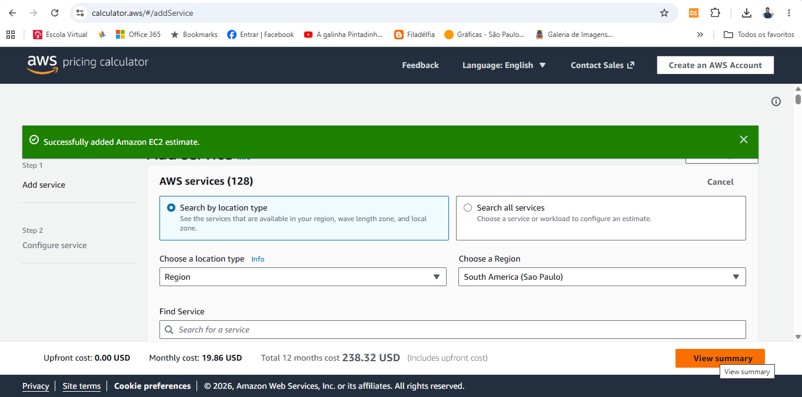

Análise comparativa de infraestrutura AWS para uma fazenda inteligente, considerando custo, latência, disponibilidade arquitetural e proteção de dados.
Este material é o complemento visual da Entrega 2. O conteúdo completo (tabelas, prints da AWS Pricing Calculator e justificativas) também está documentado no README.md do repositório, conforme exigido pelo enunciado.
Sensores coletam dados de solo, clima, umidade e condições de cultivo para apoiar decisões operacionais.
A infraestrutura precisa receber, armazenar e processar dados com previsibilidade e baixa latência.
Comparamos São Paulo e N. Virgínia sob três critérios: custo, proximidade da operação e governança.
| Requisito | Configuração escolhida | Status |
|---|---|---|
| Região | São Paulo (sa-east-1) × N. Virgínia (us-east-1) | ✓ Atende |
| Sistema operacional | Linux | ✓ Atende |
| Modelo de cobrança | On-Demand — 100% | ✓ Atende |
| vCPU | 2 | ✓ Atende |
| Memória | 1 GiB | ✓ Atende |
| Rede | Até 5 Gbps | ✓ Atende |
| Instância | t3.micro | ✓ Atende |
| Armazenamento | 50 GB — Amazon EBS gp3 | ✓ Atende |
A t3.micro foi selecionada por atender simultaneamente aos requisitos mínimos de 2 vCPU, 1 GiB de RAM e até 5 Gbps de rede, conforme a especificação oficial da AWS para esse tipo de instância — e por ser a menor configuração da família T3 que cumpre todos os critérios do enunciado ao mesmo tempo.

Valores estimados utilizando AWS Pricing Calculator, modelo On-Demand (100%), Linux/Unix, EC2 t3.micro e EBS gp3 de 50 GB. A decisão não deve ser tomada apenas pelo menor preço.
As latências são aproximações para fins acadêmicos e podem variar conforme operadora, rota, congestionamento e arquitetura de rede. Os valores devem ser validados por testes de conectividade realizados a partir do ambiente onde os sensores estarão instalados — não representam benchmark oficial da AWS.
Coleta de temperatura, umidade, solo e condições ambientais.
EC2 t3.micro + EBS gp3 como ambiente inicial de processamento e armazenamento.
Dashboards, análises, alertas e futuras integrações com serviços gerenciados.
Dados e processamento ficam próximos da operação agrícola.
A base pode evoluir para serviços gerenciados, filas, bancos e analytics.
Monitoramento e métricas podem ser incorporados conforme a solução cresce.
IAM, criptografia, logs, backups e segmentação devem acompanhar a evolução.
Os sensores definidos na Entrega 1 produzem as variáveis (precipitação, umidade, temperatura) utilizadas pela solução FarmTech. Nesta etapa, a infraestrutura AWS é responsável por receber esses dados por meio de uma API, armazená-los e disponibilizá-los para o processamento e execução dos modelos de Machine Learning.
Coletar somente dados necessários para as finalidades definidas no projeto.
Aplicar controles de acesso, criptografia, monitoramento e gestão de incidentes.
Definir responsabilidades, retenção, finalidade e trilhas de auditoria.
Se houver transferência internacional de dados pessoais, é necessário observar a LGPD e os mecanismos regulamentados pela ANPD.
Ponto de atenção: hospedar na região brasileira não significa, isoladamente, que toda operação esteja livre de transferências internacionais. A análise deve considerar o fluxo efetivo dos dados e os serviços utilizados.
Matriz qualitativa para apoio à decisão acadêmica; não representa benchmark oficial da AWS.
Menor latência estimada para uma operação agrícola localizada no Brasil.
Arquitetura local simplifica a análise de fluxo de dados, sem substituir os controles de LGPD.
Diferença de referência: + US$ 8,27/mês. O custo adicional é conhecido e justificado pelo contexto.